BGAFlow：用个性化时域与状态残差流控制跨域序列迁移
- 论文：Bézier-Guided Adaptive Flow for Cross-domain Sequential Recommendation
- 作者：Ziang Lu、Yu Zhang、Xinzhe Jiang、Lei Sang、Yiwen Zhang
- 第一作者机构：安徽大学；作者列出的机构均为安徽大学。
- 发布时间：2026-10-22，arXiv v1；阅读日期：2026-10-26。
- 论文入口：arXiv:2610.30825
- 代码状态：本轮在论文正文与入口中未核验到独立官方代码仓库。
- 发表状态：预印本。首页 ACM 年份、卷期零值与 DOI 占位符不能作为 TOIS 录用证据。
1. 背景和问题
用户在不同领域中的偏好一致程度各不相同，而现有方法经常采用全局对齐目标或粗粒度迁移策略，这可能引入无关信息，也限制了按个人偏好调整语义表示的灵活性。这是摘要提出的具体问题。跨域序列推荐希望利用另一个领域中的历史行为改善当前领域的下一物品预测，但领域之间存在相关性，并不意味着每个用户的兴趣都具有同样强的对应关系。某人购买运动装备和日常服装可能都围绕户外生活展开，另一人的这两类消费却可能分别由竞技训练和工作着装驱动。统一施加同样的表示对齐，会把第二个人并不相关的兴趣揉在一起。
这篇论文研究的任务有明确边界：两个领域具有互不重叠的物品集合，但存在重叠用户，模型读取同一用户在两个领域中按时间排序的交互序列，分别改善两边的下一物品推荐。它没有直接解决完全没有目标域历史的匿名新用户推荐，也没有证明可以在身份无法打通的两个平台之间迁移。论文在引言中以数据稀疏和冷启动说明研究动机，实验证据却来自经过交互次数过滤的重叠用户，因此冷启动收益不能从动机直接推导出来。
作者将困难拆成相互依赖的两部分。第一部分是决定迁移多少：如果两个领域的兴趣只共享很小一部分，应该保留大部分原有语义；如果偏好高度一致，就可以走得更远。第二部分是决定迁移过程中怎么走：即使起点、终点和总迁移强度相同，一次向量融合与连续状态修正也可能产生不同的中间表示和最终排序。只研究强度会把路径视为黑箱，只研究路径又可能让本不应迁移的用户遭遇过强修改。BGAFlow 试图把这两个决定放在同一个结构中。
已有共享网络通过跨域连接传递隐藏表示，对比学习或对抗学习则鼓励两域表示在整体上更一致。它们具有不同能力，不能一概说成完全没有用户差异；论文自己的相关工作也提到了迁移性估计与协同控制。作者更具体的主张是，用户层面的迁移程度与依赖中间状态的语义演化，通常没有被明确地联合建模。因此这里需要比较的不是“共享”与“不共享”，而是同样的跨域证据在不同用户和不同演化阶段如何参与预测。
另一个容易忽略的问题是可比性。两个独立领域的物品 ID 向量来自不同协同统计，直接计算余弦相似度并不能保证含义一致。假设电影向量中的某个方向表达叙事节奏，服装向量中同一坐标却表达价位，数值接近并不意味着偏好重合。本文把 ID 协同分支留在各自领域，另外建立共享的文本语义分支，迁移主要发生在这个可比较的语义空间中。这种分工使领域专有信号可以继续为排序服务，减少为了统一空间而抹掉本域结构的压力。
大模型在这里承担用户画像提炼工作，而不是直接生成最终推荐列表。输入是两域已有交互物品的文本元数据，输出是分别描述两域偏好的短文本。提示要求不复制商品标题、不输出品牌名或产品 ID，并把观察概括为可复用的兴趣特征。这样的设计意图是抽离表面物品身份，让两域偏好在更抽象的语义层面比较。画像依然是模型从有限历史中作出的推断，不等同于用户明确表达的稳定偏好，也可能受到描述缺失、行为偶然性和模型刻板归纳影响。
论文用运动与服装数据中的画像相似度分布说明用户存在差异，再观察不同对齐机制随相似度分组改变的表现。这类分组是有用的诊断，但不能当作迁移需求的真实人工标注。因为分组信号本身来自大模型画像，而模型也利用画像构建迁移控制器，二者存在语义来源关联。合理的阅读方式是把它作为设计一致性的证据，再通过独立推荐指标判断是否确实带来效益，而不是仅凭曲线随组变化就宣布避免了负迁移。
在目标定义上，论文优化的是下一物品预测，而不是让两域向量越相近越好。这个区别很实际：一个喜欢某类电影的用户未必购买对应主题的图书，把其电影兴趣直接压进图书表示可能损害本域预测。适应过程需要同时保留起点信息、利用跨域线索，并接受推荐损失的约束。因而文中把语义演化写成连续进度，不应被误解为现实时间上的用户兴趣轨迹；积分进度是模型内部的计算变量，用户过去一年里的事件时间只是序列输入。两种时间承担不同职责，方法并没有预测用户未来兴趣如何随自然日历变化。
本文值得关注的技术核心是几何参考与任务修正的分离。二次 Bézier 曲线给出一条结构化参考路径，用户画像生成中间控制点；个性化时域决定沿参考路径截取多长；残差网络再依据当前状态读取兴趣原型，逐步调整偏移。曲线本身已经解析可得，因此没有必要花一个网络重新学习它的已知切线。作者把学习能力用在推荐任务需要的偏离上，这也使实验中“闭式曲线”“匹配切线的流”和“状态残差流”的比较成为关键。
从研究实践看，这项工作适合用来思考跨业务线兴趣传递中的精细控制，但不能直接当作现成在线系统方案。论文给出了两组公开零售域实验、详细组件分析和一个可视化案例，没有线上曝光收益、服务延迟或生产身份映射的报告。读者应把可验证的贡献定位在表示迁移方法和离线机制证据，而把画像维护成本、请求时计算预算以及不同用户群的风险留作后续需要验证的问题。
2. 方法
2.1 统一双域预训练
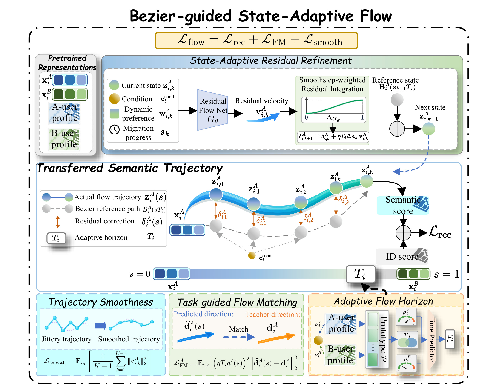
Fig. 3 的上层展示残差网络的输入：当前语义状态、迁移进度、由两域画像生成的条件，以及用当前状态查询得到的原型偏好。网络输出不是完整下一状态，而是对参考曲线的残差速度；积分块累积修正后，与下一进度处解析计算的曲线位置相加。下层三个模块分别控制时域、训练教师和轨迹平滑，最终语义得分再与本域 ID 得分结合。理解这张图时，应把灰色参考路径和蓝绿色实际路径分开：两者共享几何引导，但实际路径可以逐步偏离，终点也不必等于另一领域的语义表示。图中黄色时域模块不仅改变灰色参考路径的终点，也通过残差更新式中的乘数限制蓝绿色路径偏离参考的幅度，因此两种控制在结构上绑定。蓝绿色轨迹上的橙色箭头表示累积偏移，不能当作每步原型检索直接生成的兴趣向量。训练时中间绿色监督模块提供方向信号，推理则沿上方状态反馈回路前进，目标物品不参与这个闭环。底部平滑模块作用于最终组合轨迹的二阶差分，避免只让网络输出平滑却仍使总状态突变。这种分解让参考、控制、监督与实际滚动各自有明确位置，也解释了为何移除教师、改为线性参考和固定时域应分别消融，而不能用同一个“去掉流”实验概括所有机制。
预训练先将两域交互转成文本历史，利用 LLM 分别生成画像，再经共享投影得到画像向量。ID 塔按领域独立，文本塔跨域共享，文本物品嵌入先通过 MoE 投影再送入 Transformer。用本域协同表示 h 与语义表示 x 分别对对应物品表打分，相加计算推荐交叉熵，原文式（2）可写成：
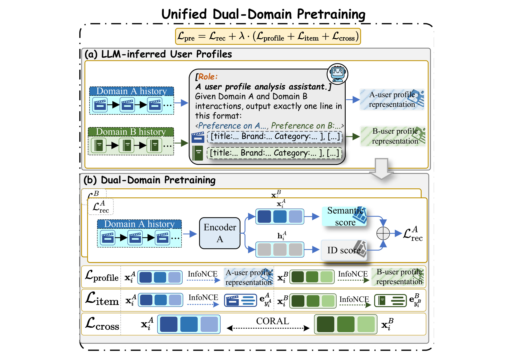
Fig. 4 将三类辅助目标区分得很清楚。画像对齐以同一用户的高层兴趣文本为正例，让序列语义跳出单个商品词面；物品语义对齐以真实下一物品文本为目标，使语义表示仍然与预测任务相关；CORAL 比较两域批次的协方差，改善分布可比性。最后一项没有要求每对用户的两域表示完全相同，因此为后续个性化迁移保留空间。图中的 ID 与文本两条得分路径始终同时存在，不能把这个模型理解成用画像彻底替代协同行为。这张图还展示了不同对齐对象的层次：画像目标面向用户概括，物品目标面向当前下一行为，协方差目标面向批次总体。它们共同约束同一语义分支，却不能互相替代。若只使用用户画像，表示可能保留宽泛兴趣却丢失当前预测需求；若只使用下一物品，跨域语义尺度又可能继续分化。作者没有把协同塔跨域统一，因此后续参考曲线的两个端点应从共享文本塔取得，而不是直接从各域的物品 ID 表读取。
两个 InfoNCE 目标分别使用批内其他画像与其他物品作为对照，CORAL 则为两域协方差差异的平方 Frobenius 范数除以四倍维度平方。总预训练目标对应式（6）。符号解释：D 为共享语义维度，X 是一个批次的用户语义矩阵，Cov 表示中心化后的协方差，λ 为三个辅助项共同使用的权重。协方差约束只能限制二阶分布统计，不能证明逐用户匹配正确，所以仍需单独预测用户的迁移程度：
这个阶段输出可比较的语义端点和领域协同表示。后续阶段继续训练预训练编码器，论文明确没有把它们全部冻结。因此最终性能包含语义初始化与后续联合优化的作用，不能把所有差异都归到单独一个流网络。
2.2 原型偏好与个性化迁移时域
作者对两域物品语义做球面聚类，得到共享兴趣原型集合 P。画像投影 q 与每个原型的相似度经 softmax 构成兴趣分布，再用归一化 JS 散度衡量两域重合程度。每个原型表示一种潜在语义方向，而分布刻画画像对不同方向的相对偏好；这种比较减少了单个向量余弦只反映总体夹角的局限，但其质量依赖原型聚类与语义嵌入。对应式（7）至（9）：
JS 通过两个分布各自相对平均分布的 KL 散度取平均，使 r 位于零到一。模型将两域画像拼接经 MLP 得到条件控制点 c，再计算 c 与两域画像的几何相似度，将这些量共同送给时域预测器。这里的几何相似度不是额外人工标签，而是由当前条件网络产生的可学习关系，最终接受推荐目标监督；sigmoid 约束输出范围，不意味着输出随兴趣重合程度严格单调。式（12）为：
T 同时控制参考路径的截取程度与残差幅度。它不是用户确定喜欢另一域的概率，也不是推理循环的实际步数；所有用户仍在归一化进度零到一上执行离散更新，只是对应的曲线参数终点不同。原型也不是另一份独立模型输出，而是同一集合同时用于时域估计和动态反馈，减少了两种偏好空间相互矛盾的可能。
2.3 Bézier 参考与状态自适应残差
以预测 A 域为例，起点是 A 域语义，终点参考为 B 域语义，中间控制点来自两域画像。式（13）、（15）给出。t 是参考曲线参数，s 是统一的积分进度，δ 则是已经积累的偏移；把二者分开可以直接评价解析参考位置，同时让学习网络只承担参考无法表达的任务修正，避免把已知几何运算重复拟合：
曲线切线可直接求导，残差初值为零。每一步用当前 z 对原型重新 softmax 检索，得到加权原型向量 w。状态反馈的关键是查询随 z 改变，而非将预先算好的画像向量反复输入。 以式（16）至（18）的简写表示：
其中 η 是整体修正尺度，G 是残差速度网络，w 为随状态变化的原型加权向量。平滑调度的导数在两端为零，控制附加修正逐渐激活和减弱。这不意味着完整轨迹在两端停止，因为曲线参考仍有自己的切线。也不能说调度在修复一条不光滑的 Bézier 曲线；参考本身就是光滑的，调度所约束的是学习残差的注入方式。
2.4 任务引导教师、离散积分与预测
训练教师先在参考终点 B(T) 计算推荐损失，然后对该语义向量求负梯度、范数裁剪并停止梯度，得到每个训练样本固定的方向 d。这个方向以完整推荐打分头定义，因此会受到本域协同表示与物品语义表共同影响；停止梯度防止训练时通过教师方向形成高阶反向依赖，裁剪则限制异常梯度带来的过大监督。式（20）为：
教师方向只在参考终点计算一次，不会在每个中间状态反复求任务梯度。学生在教师路径上读取状态和原型反馈，预测修正方向，并以式（24）的加权误差训练。权重平方来自残差速度本身包含的尺度与调度导数，因此靠近起终点的误差权重自然较低；模型拟合的是教师给出的附加任务方向，而不是已经能解析求出的参考切线：
推理不需要真实下一物品，也不需要任务梯度教师，只依靠学习好的速度网络滚动。设 K 步、s_k=k/K，实际更新用调度函数的精确差分，而不是左端导数近似，对应式（26）。每步先在当前状态检索原型，再预测方向，最后更新残差并评价下一参考位置，不能将动态偏好只在起点计算一次。K 决定这段滚动中的离散粒度，Δa 则决定当前区间分配的残差权重：
精确差分权重之和为一，当速度恒定时终点残差与 K 无关；速度依赖状态时仍是数值近似，不能宣称任意步数都精确。式中 ηT 决定修正总量的尺度，精确调度差分只消除了调度离散化所产生的一类误差，并没有消除网络方向在步内变化的误差。最终将 z_K 与本域 ID 表示共同打分，以推荐损失、流匹配损失及完整轨迹的离散加速度惩罚联合训练。加速度为 K² 倍二阶状态差分，平滑项作用于曲线加残差的总状态，而非只约束速度网络输出。
理论部分在速度有界的前提下得到总偏移上界 T_i(M_B+ηM)，说明短时域限制可允许的表示改变量。这个结论没有保证推荐准确率提升，也没有证明负迁移被完全消除。其中 M_B 表示参考曲线速度的上界，M 表示残差速度上界，二者的存在与数值大小都是使用该界时需要满足的条件。它解释的是控制器如何约束几何变化范围，真实的任务好坏仍需后面的消融与推荐评估回答。
3. 实验结果
3.1 数据处理与评估边界
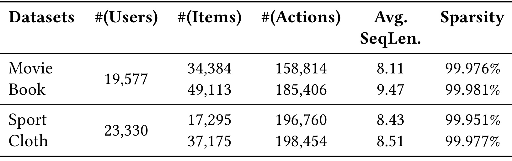
Table 1 对应两组 Amazon Review 跨域数据。电影与图书两域共享用户数为 19,577，运动与服装为 23,330。各域平均序列长度约八到九次交互，稀疏率均超过百分之九十九。电影有 34,384 个物品，图书有 49,113 个物品，运动有 17,295 个物品，服装有 37,175 个物品；用户数是域对共享值，不应逐行相加成新的用户规模。这种短历史、高稀疏的设置使文本语义具有帮助空间，也限制了对长周期兴趣演化的外推。
预处理先移除没有文本元数据的物品，将评分不低于四的行为视作隐式正反馈，保留每位用户最近一年交互并按时间排序，迭代过滤交互不足五次的用户和物品，再要求用户在两个域都超过两次交互。评估取各域最后交互物品为真实目标，随机采样 999 个负物品，加上一个正例形成一千候选，使用 HR 与 NDCG 的前五和前十版本。这属于采样候选上的离线排序，不是全物品库检索，更不是线上点击率。 同时使用两个领域序列时还应在复现中核查跨域时间截止，避免目标域预测时读到另一域未来行为；本轮没有运行作者代码验证这一点。
实现使用 Qwen3.5-4B 生成画像、Qwen3-Embedding-4B 编码画像和物品，输出语义维度及隐藏维度为 128，预训练 Transformer 两层、单注意力头，MoE 四个专家。Adam 学习率为十的负四次方，批量 128，辅助损失权重 0.1；使用验证集两域平均 HR@10 和耐心值十做早停。默认 128 个原型、16 个积分步骤，硬件为 RTX 5090。这些是论文报告设置，没有随附本轮独立复现实验，因此不能把硬件型号当作速度测试结论。
3.2 主结果与不同基线的含义
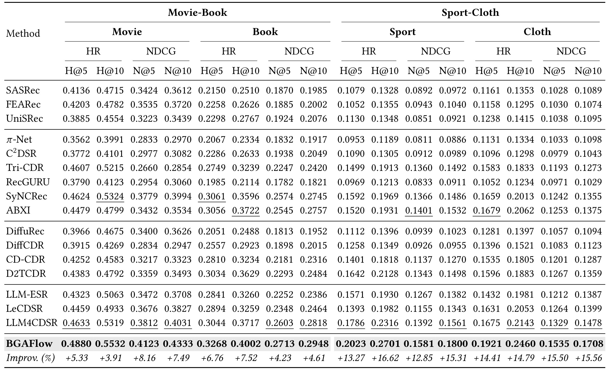
Table 2 报告 BGAFlow 的 HR@10 在 Movie、Book、Sport、Cloth 四域依次为 0.5532、0.4002、0.2701、0.2460，对每列最强基线的相对提升分别为 3.91%、7.52%、16.62%、14.79%。四域 NDCG@10 为 0.4333、0.2948、0.1800、0.1708，对应相对提升 7.49%、4.61%、15.31%、15.56%。这些提升的分母随指标而变，不都是同一个模型；例如 Movie 的 HR@10 最强基线是 SyNCRec，而多个其他列由 LLM4CDSR 领先。把整行概括成“统一超过某基线百分之十六”会失去比较口径。
以 Sport 的 HR@10 为例，最强基线 0.2316 到 0.2701 的绝对差是 0.0385，相对提升约 16.62%。Cloth 从 0.2143 到 0.2460，绝对差为 0.0317。Movie 从 0.5324 到 0.5532，差值为 0.0208，不能将 3.91% 误写成增加 3.91 个百分点。论文主表将全部指标的提升概括为 3.91% 至 16.62%，并称相对基线具有 p 小于 0.001 的统计显著性；表中未同时给出逐项方差或置信区间，本笔记保留作者报告而不作独立统计确认。
比较组覆盖单域 SASRec、FEARec、UniSRec，传统跨域方法，扩散方法，以及三类 LLM 增强基线。作者为 LLM 方法统一采用同样推理和嵌入模型，降低基础模型不同带来的偏差。不过主表仍然比较完整系统：BGAFlow 同时拥有共享语义预训练、个性化时域、条件曲线和残差训练，单靠这一张表无法归因每个模块。较强的传统方法有时超过部分语义方法，也说明加入大模型信息并不是自动获益的充分条件，表示组织与迁移控制仍会影响结果。
3.3 组件与辅助目标消融
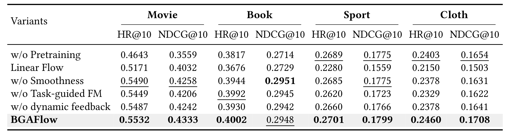
Table 3 最显著的下降来自移除预训练或改用线性参考。Movie 去掉预训练后的 HR@10 为 0.4643，相比完整模型 0.5532 减少 0.0889；线性参考为 0.5171。Sport 线性参考为 0.2280，而完整模型为 0.2701。去掉任务引导流匹配或动态反馈，也会在各域造成不同程度下降。这说明结果不是只靠一个曲线形状，也依赖预训练语义基础和推荐任务监督。表中 Book 去掉平滑后的 NDCG@10 为 0.2951，略高于完整模型 0.2948，因此不能写“每个组件在每项指标上都不可缺少”。这里的下降幅度反映特定数据和训练配置下的系统依赖，不能被解释为对模块价值的普遍排序；同一组件在不同领域承担的信息补充量并不相同。
完整模型的 Sport NDCG@10 在该表为 0.1799，主表则为 0.1800，存在万分之一差异。论文部分图也使用 0.1799，本笔记按各原始对象分别保留，没有自行合并为同一个更精确的数字。差异很小，不改变整体排序，但提醒复现时需要核对取数版本、随机种子与舍入口径。预训练消融在 Sport 上的 HR@10 只从 0.2701 降到 0.2689，却在 Movie 大幅下降，也表明模块贡献具有域差异，不能用平均结论替代每个业务域的检查。
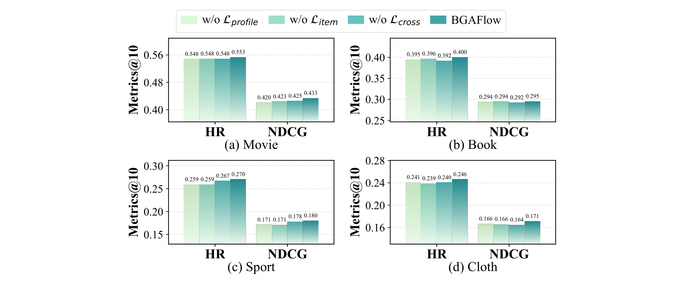
Fig. 5 分别去掉画像对齐、物品语义对齐和协方差对齐。图中 Movie 的完整模型 NDCG@10 约 0.433，去掉画像对齐后约 0.420；Book 去掉跨域协方差约束后的 HR@10 约 0.392，完整模型约 0.400。Sport 去掉画像或物品目标后 HR@10 都约 0.259，而完整模型约 0.270。这里应读各目标所提供的信息类型与差异方向，而不要把图上三位小数读成与主表四位小数相同精度。结果支持画像提供用户语义、物品目标保持预测相关性、跨域约束改善空间可比性的分工。比较四个面板还能看到辅助目标的效应不完全一致：Book 的归一化排序收益较小，而 Sport 对画像与物品目标更敏感；Cloth 去掉协方差约束后的归一化指标约为零点一六四，低于完整模型约零点一七一。协方差对齐虽然没有逐用户配对监督，仍可能通过改善共享空间统计结构影响下游路径。这并不说明它能独立识别哪些用户应当强迁移，而是说明个性化控制建立在质量足够的语义端点之上。由于三项损失使用共同权重，逐项去除还改变了总辅助正则强度，严格复现时可以补充等总权重对照，进一步区分信息类型与正则量的贡献。
3.4 步数、原型与迁移时域
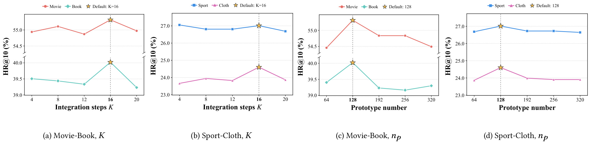
Fig. 6 在四、八、十二、十六、二十步之间比较积分粒度，十六步在多数域表现较好，但 Sport 的 HR@10 在四步略高。因此增加积分次数并不保证收益；更多步骤让网络有更多状态更新机会，也增加调用次数。原型数量在六十四到三百二十之间变化，一百二十八为作者默认最优设置。图中纵轴采用断轴，应看标注数值和变化范围，不能凭线段高度误判提升幅度。论文没有同步列出这些配置的延迟、显存和吞吐，因而这里只能讨论准确率敏感性，无法给出最优服务成本。
时域估计的额外对比包括直接画像余弦、直接语义余弦，以及保留预测器但改用学习语义输入。作者报告原型重叠加条件几何的组合在四域均优于这些替代。控制点实验又比较画像平均、全局共享、随机、只看源域和只看目标域；双域画像条件化方案更好。这些对照支持不同信号的组合，但没有独立证明某个潜在兴趣原型具备人可解释语义，也没有消除画像误差。它们应与下面固定时域的对照共同看，区分“输入表达更好”和“逐用户调节有用”。
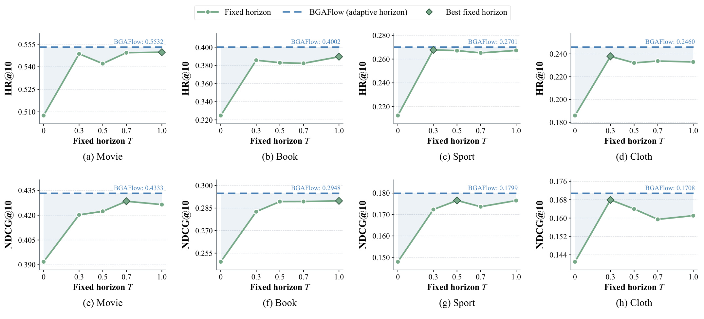
Fig. 12 把所有用户的时域固定为零、0.3、0.5、0.7 或一，保持其他结构，虚线表示个性化版本。零时域相当于不走参考路径且残差也被压为零，通常表现较差；增大时域后收益却不单调，最优固定值因域和指标不同而变化。个性化方案超过所测固定配置，但 Sport 的差距较小。因为 T 同时改变曲线位置和残差幅度，这个实验确认的是联合控制有效性，不能把差异仅解释成“学会了最佳停止位置”，也不表示已找到每个用户的真实最优迁移长度。图里的菱形标记只代表作者测试过的离散固定值中最佳者，并不是在整个连续区间上求出的最优固定时域。Movie 的命中率在较大固定时域下接近个性化虚线，Book 则表现出更明显的差距；同一域中命中率与归一化排序指标的最佳固定值也可能不一致。这支持不同样本需要不同程度适应，却无法仅从总体曲线确定哪些用户被保护。进一步的分析应固定同一批用户，查看短时域和长时域各自相对单域模型的损益，而不是只比较四个域的平均高度。
3.5 对齐机制、残差替代与个例
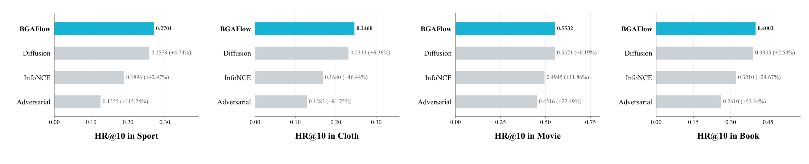
Fig. 11 比完整系统主表更接近机制验证：作者在相同骨干和语义特征上比较对齐方式，其中扩散变体也使用 BGAFlow 的时域预测器。BGAFlow 相对扩散在 Sport、Cloth、Movie、Book 的 HR@10 提升分别为 4.74%、6.36%、0.19%、2.54%。Movie 的两者数值为 0.5532 与 0.5521，差距很小，说明在这个域不能夸大流机制优势。相对 InfoNCE 和对抗对齐的提升更大，但选择最弱对照作宣传会掩盖与更有竞争力替代方法的真实距离。此外，图中百分比是完整模型相对该行变体的增幅，不能倒过来理解为变体相对完整模型的下降百分比；两者的计算分母不同。
作者还按画像兴趣相似度将用户分组，观察完整模型对齐强度随组变化更加明显。这个结果与个性化设计相符，但对齐强度并非推荐质量本身，强对齐也不总是好事。两域兴趣弱相关时，保持较低强度可能更合理。相比只展示组间对齐曲线，Fig. 11 的任务指标更能回答实际价值；后续若要检验负迁移，仍应补充每个相似度组相对单域模型的收益与受损用户占比，而不能只报告总体均值。
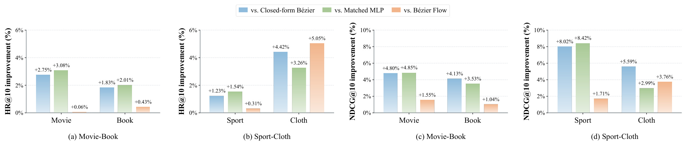
Fig. 13 比较不学残差的闭式 Bézier、参数匹配的一步 MLP 修正，以及直接学习解析切线的 Bézier Flow。完整模型相对闭式曲线最高获得 HR@10 约 4.42%、NDCG@10 约 8.02% 的提升；相对切线流的 NDCG@10 提升为 1.04% 至 3.76%。这组对照直接支持任务引导残差超过几何插值的价值，同时显示部分 HR@10 差异很小，例如 Movie 相对切线流只有 0.06%。它没有把动态反馈、教师方向与积分结构完全正交拆开，因此更适合支持整体残差设计，而非证明每个局部操作都独立充分。三个替代方案分别检验不同疑问：闭式曲线检验是否仅靠条件几何就足够，一步网络检验多步演化是否只是参数量增加，切线流检验学习已知几何速度是否能替代任务残差。参数匹配能够减少容量差异，却不自动匹配训练目标和计算量，所以不能把一步网络的差距完全归因为连续动力学。图中服装域相对切线流的命中率增幅明显高于其他域，而电影域几乎持平，说明路径修正价值取决于参考几何与目标排序之间的错位程度。更完整的判断还需结合前表去掉动态反馈和去掉任务监督的消融，观察训练目标与状态依赖共同发挥作用的证据。
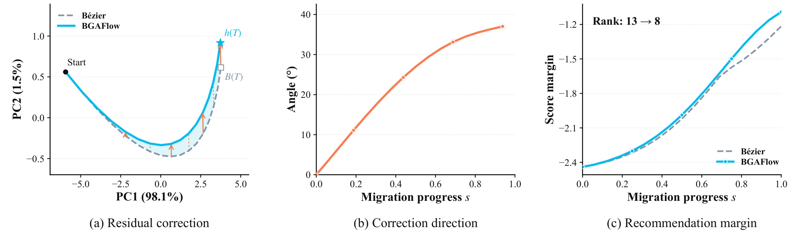
Fig. 14 左侧用二维 PCA 可视化曲线与实际轨迹，中间报告残差方向相对初始方向的角度，后期约为三十七度；右侧看真实物品相对最强负例的得分差，最终排名从十三变为八，进入前十。角度和得分是在原始 128 维空间计算，并非直接从二维图读出。两条路径固定协同表示、物品嵌入、门控权重和候选，只改变中间语义表示，因此是较清楚的局部机制案例。但得分差最后仍为负，说明真实物品没有超过最强负例；进入前十不等于变成第一名。单个成功案例也不能替代用户总体分布。左图第一主成分解释百分之九十八点一的方差，第二主成分解释百分之一点五，因此可视化主要呈现所选用户的一条低维主变化方向，不能由两条二维曲线的间距推断所有语义维度的变化规模。中图角度增大表明预测方向随进度改变，但方向改变本身未必有益，必须结合右图排名改善才具有任务含义。即便目标超过了若干负例，最强负例得分仍高于目标，这与排名第八是相容的，也说明用“成功进入前十”描述该案例比“完成准确对齐”更严谨。
4. 总结
BGAFlow 最有启发的设计是让跨域迁移同时拥有可计算的几何参考、逐用户程度控制和任务相关的局部修正。共享语义空间负责把两域放在能够比较的位置，画像和兴趣原型负责描述可迁移的重合程度，Bézier 条件点负责建立先验路径，残差网络则利用当前状态逐步改善任务方向。保留本域 ID 分支使协同信息无需被全部统一，训练期参考终点梯度又为残差提供了比解析切线更直接的预测目标。这些部分相互支撑，主表与消融共同说明组合在所测公开数据上有效。
从证据强度看，最可信的结论是两组重叠用户、四个零售域、采样一千候选条件下的离线排序提升。主表给出了足够多基线，额外实验又对比相同骨干的对齐机制、不同固定时域、参数匹配的一步修正和解析曲线替代。因此它的价值超出了“换一条曲线就有效”的描述。但没有哪一个实验能单独证明所有用户都受益，更没有依据把相对提升直接换算成线上曝光点击提升。
局限至少有四个层面。第一，数据过滤要求用户在两个域都有历史，真正新用户、仅单域用户和身份不重叠用户尚未获得同等验证。第二，画像由外部模型推断，缺少真实用户意图标签及画像错误扰动实验，兴趣重合的可靠性仍需检查。第三，评估采用随机负例，热门难负例、全库排序和业务候选分布下的难度可能不同。第四，十六步状态演化与原型查询需要计算，但论文没有给出端到端画像成本、在线延迟或吞吐，性能与服务预算之间的关系无法量化。主表和消融表中万分之一差异也提示应保留原始实验日志做版本核对。
还应注意训练与推理状态分布的不同。教师路径使用真实下一物品的推荐梯度，而推理只能沿学生自己生成的状态前进，错误可能逐步改变原型检索结果。状态条件化给了纠偏能力，也可能引入滚动误差；单个轨迹案例不能证明所有轨迹都稳定。理论偏移界需要速度有界条件，保证的是向量变化范围，不是排序损失上界。若将“短时域”理解为无条件安全，就超出了论文给出的证明。
后续值得优先开展三类验证。首先固定数据与基础语义特征，复现参考曲线、一步 MLP、切线流和任务残差的公平对照，同时记录随机种子、统计区间与不同步数计算成本。其次按两域历史长度、画像置信度与兴趣相似度分组，报告相对单域基线的收益分布和负迁移用户比例，验证控制器是否真正保护弱相关用户。最后扰动画像、移除部分元数据并进行严格跨域时间截断，观察时域预测与滚动轨迹是否稳定，确认迁移收益没有依赖未来信息或脆弱文本线索。
对推荐工程的可迁移思路是把“是否迁移、迁移多少、迁移路径如何修正”分解成可观察部件，再用统一任务指标与分组诊断连接它们。实现时仍需根据候选规模、缓存方式和更新频率做实际测量，不能仅凭离线曲线选择步数。当前版本适合作为跨域兴趣表示的研究方案和机制对照参考；是否适合业务部署，需要新的数据、严格时间协议与成本证据。